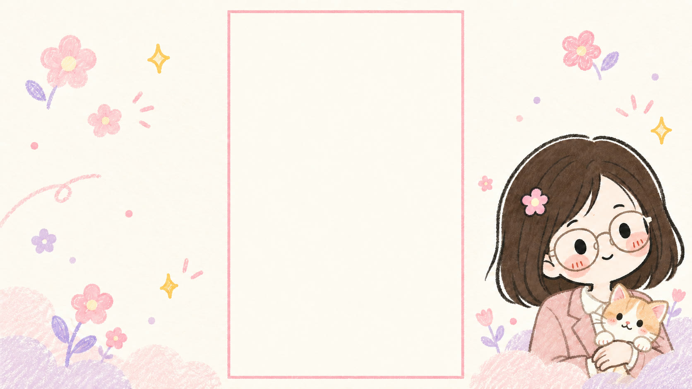
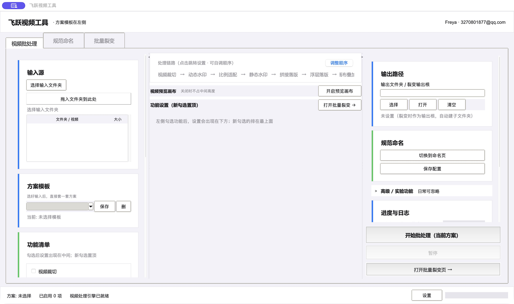

产品介绍
把重复包装，留给飞跃。
35 秒，真实桌面界面剪辑 + 实际导出效果 + 合成配音。讲清模板复用、规范命名与多方案输出。
左侧选素材与功能，中间设置，右侧查看输出。
网页演示使用示例素材，完整批处理在本地完成。

输入项目名称，预览一组素材如何变得整齐。
仅展示命名规则，不会修改本地文件。
每个分支引用一套工作流，输出到各自的文件夹。
流程演示，不执行视频编码；每个分支从序号 1 开始。

35 秒，真实桌面界面剪辑 + 实际导出效果 + 合成配音。讲清模板复用、规范命名与多方案输出。
选择输入与输出文件夹，把需要处理的视频集中起来。
组合裁切、贴图、音频与片尾设置，将常用参数保存为方案模板。
按方案执行处理；用规范命名和成品重编号整理输出文件。
视频创作中，很多时间花在相同的步骤上：给不同素材添加同一个 Logo，替换配乐，拼接片尾，再整理文件名。
飞跃把这些操作集中到桌面工作台，用方案模板保留配置，用批量裂变组织多套输出。这个项目探索的是：如何把日常工作的具体需求，变成真正能用的工具。
桌面版本导入带透明通道的 MOV 文件，可全屏贴合或自定义位置。网页里的文字拖动仅用于布局预览。
目前专注本地视频包装与批量工作流；宣传片的合成配音属于视频制作，不是工具内功能。
网页沿用桌面版顶部页面切换和左中右工作台分区，提供部分功能预览：背景合成、Logo 水印、正片结束后接落版并保留落版原声，以及命名与裂变流程。完整的视频读取、编码和批量导出由本地桌面工具执行。
同一组素材按多套完整方案分别处理。每个分支可以引用不同模板，并输出到独立文件夹，便于后续整理。
本页使用提供的视频、插画背景和示例文件名，无需上传素材。桌面工具读取本地文件，并将成品写入你选择的输出目录。
你可以查看 GitHub 项目与现有下载包。飞跃 / Freya 安装包已提供下载，适用于 macOS Apple Silicon。
把时间留给创作。
3270801877@qq.com